Cap. 17 Regressão linear múltipla
Objetivos do capítulo
1. Apresentar o modelo de regressão linear múltipla
2. Mostrar o relacionamento entre este modelo e os modelos da família da ANOVA previamente exposta
3. Introduzir testes diagnósticos sobre colinearidade
4. Apresentar técnicas de seleção automática de variáveis
Os modelos de regressão linear múltipla são desenvolvidos para predizer os valores médios de uma variável resposta (Y) em função de duas ou mais variáveis independentes (X). Estes modelos tendem a ampliar a acurácia obtida por uma regressão linear simples, apesar de também aumentarem a complexidade de sua realização e interpretação. Nestes modelos, a VD deve ser contínua e as VIs podem ser tanto contínuas como categóricas. Tecnicamente, a família da ANOVA vista anteriormente são casos particulares de modelos de regressão múltipla.
Conceitualmente, neste modelo, se adicionam outros preditores à equação vista no capítulo de regressão linear simples. Assim:
\[y_i = b_0 + b_1X{_1}_i + b_2X{_2}_i + ... + b_pX{_p}_i+ \epsilon_{i}\]
\(y_i\) representa a variável dependente
\(b_0\) é o intercepto (coeficiente linear)
\(b_p\) indica a inclinação de cada um dos preditores
\(\epsilon_{i}\) é o erro/resíduo
A interpretação dos resultados obtidos depende dos seguintes pressupostos:
- A relação entre as variáveis é linear
- Os resíduos são independentes
- Os resíduos são normalmente distribuídos (com média)
- A variância dos resíduos é constante
O mnemônico LINE (linearity, independence, normality, equal variance) talvez ajude a lembrar destes pressupostos.
17.1 Pesquisa
A base desta pesquisa está disponível em formato R (Rdata) e em CSV, que é lido pelo JASP. Clique na opção desejada.
Base R: Imagem corporal
Base JASP: Base CSV - csv eat bsq brasil
Neste capítulo, vamos utilizar a pesquisa intitulada “Aspects Related to Body Image and Eating Behaviors in Healthy Brazilian Undergraduate Students”, publicada em 2018 no Global Journal of Educational Studies, que sou coautor.
O objetivo dessa pesquisa foi explorar os fatores envolvidos em transtornos alimentares e na percepção da imagem corporal. Os primeiros aspectos foram avaliados pela escala EAT-26, enquanto o segundo foi avaliado pela escala BSQ-34.
Uma das principais hipóteses era possíveis alterações na percepção da imagem corporal, bem como o índice de massa corporal (IMC) poderiam ser preditores no desenvolvimento de transtornos alimentares. Neste sentido, pessoas com uma distorção na percepção de imagem corporal (dadas por resultados altos do BSQ), além de alto IMC tenderiam a fazer uma restrição alimentar mais intensa (obtidas pelos valores do EAT)
Da mesma forma que apresentado no capítulo de regressão linear simples, a definição estatística das hipóteses em modelos de regressão costuma ser feita em cascata. Quase sempre, se compara o modelo de desenvolvido com um modelo mais simples. Em seguida, verifica-se cada preditor de forma individual e assim sucessivamente. Uma vez que a definição de cada hipótese ocuparia um espaço grande aqui, elas serão suprimidas.
17.2 Execução no R
A primeira etapa da análise é realizada pelo desenvolvimento de tabelas e gráficos que possam auxiliar na interpretação dos resultados. De maneira similar à feita em outros capítulos, abaixo há uma tabela descritiva.
arsenal::tableby(~eat_soma + bsq_soma + imc, dados_brasil) %>%
summary() | Overall (N=220) | |
|---|---|
| eat_soma | |
| Mean (SD) | 15.950 (9.753) |
| Range | 0.000 - 50.000 |
| bsq_soma | |
| Mean (SD) | 81.359 (37.003) |
| Range | 0.000 - 188.000 |
| imc | |
| N-Miss | 5 |
| Mean (SD) | 23.219 (3.590) |
| Range | 16.853 - 39.214 |
É também possível, inicialmente, implementar um modelo de correlação ou correlação parcial visando produzir maior suporte à regressão linear múltipla. O modelo de correlação estima a força e a direção da correlação bivariada e o modelo de correlação parcial é feita para estimar o quanto uma variável se correlaciona com outra após controlar essa relação por uma terceira variável. No entanto, ambas as análise apenas trariam suporte indireto à regressão linear múltipla e por isso não serão feitas.
Para criar o modelo de regressão linear múltipla no R, será necessário resgatar o modelo visto em regressão linear simples para introduzir nova variável à equação.
Neste caso, o vetor mod_linear_multiplo será armazenado para verificar o efeito da percepção de imagem corporal e do IMC no EAT-26, que se refere ao comportamento alimentar. É importante notar que, por padrão, o R não usa linhas com dados ausentes e isso pode reduzir o poder do teste. Neste base, há 215 linhas completas.
mod_linear_multiplo <- lm(eat_soma ~ bsq_soma + imc, data = dados_brasil)A apresentação dos resultados pode ser feita pelo pacote olsrr. Ela segue o mesmo formato da realizada no capítulo específico de regressão linear simples, apenas com a diferença da inclusão de um novo preditor.
ols_regress(mod_linear_multiplo)## Model Summary
## --------------------------------------------------------------
## R 0.697 RMSE 7.097
## R-Squared 0.485 Coef. Var 44.278
## Adj. R-Squared 0.481 MSE 50.365
## Pred R-Squared 0.471 MAE 5.440
## --------------------------------------------------------------
## RMSE: Root Mean Square Error
## MSE: Mean Square Error
## MAE: Mean Absolute Error
##
## ANOVA
## ----------------------------------------------------------------------
## Sum of
## Squares DF Mean Square F Sig.
## ----------------------------------------------------------------------
## Regression 10070.508 2 5035.254 99.976 0.0000
## Residual 10677.325 212 50.365
## Total 20747.833 214
## ----------------------------------------------------------------------
##
## Parameter Estimates
## ----------------------------------------------------------------------------------------
## model Beta Std. Error Std. Beta t Sig lower upper
## ----------------------------------------------------------------------------------------
## (Intercept) 10.895 3.201 3.404 0.001 4.586 17.205
## bsq_soma 0.190 0.013 0.713 14.139 0.000 0.163 0.216
## imc -0.447 0.138 -0.163 -3.231 0.001 -0.720 -0.174
## ----------------------------------------------------------------------------------------Da mesma forma que exposto anteriormente, os resultados devem ser analisados aos poucos e de maneira cautelosa.
Inicialmente, deve-se olhar a seção ANOVA e verificar se o modelo testado é significativo ou não. Neste caso, é possível concluir que o modelo foi globalmente significativo (F(2, 212) = 99.976, p < 0.001).
Em segundo momento, verifica-se o \(R^2\), que indicou que carca de 48.5% da variabilidade dos resultados do EAT-26 podem ser atribuídos aos preditores do modelo (BSQ-34 e IMC).
Em terceiro momento, o \(R^2 ajustado\) deve ser interpretado Esse indicador pune a entrada de preditores e oferece uma métrica que protege o superajuste e que ajuda a comparar modelos com diferentes números de preditores, quando necessário. Neste caso, o valor foi muito similar ao obtido previamente, mantendo a conclusão feita anteriormente.
O quarto momento consiste na interpretação dos resultados de cada um dos preditores do modelo. Em relação ao BSQ-34, cada unidade a mais em seu resultado impacta, em média, 0.19 pontos a mais no EAT-26, controlando pelo IMC do participante (p < 0.001). Além disso, cada 1 unidade a mais no IMC do participante impacta em -0.447 (p < 0.001), em média, nos resultados do EAT-26, controlando pelos valores do BSQ-34. O intercepto não tem interpretação lógica, uma vez que valores 0 no IMC não existem.
A ideia de estimar o efeito de uma variável controlando por outra faz com que esses coeficientes sejam chamados de coeficientes parciais. A forma pela qual isso é feito tem características particulares.
Assumindo duas pessoas que tem o mesmo IMC (por exemplo, o IMC médio), cada ponto extra no BSQ gera, em média, 0.19 pontos a mais no EAT-26. A função predict do R permite essa demonstração.
O valor estimado no EAT-26 de Um participante que teve 45 pontos no BSQ e tem IMC de 23.2 (o IMC médio) é de 9.06.
imc_medio <- mean(dados_brasil$imc, na.rm=T)
predict(mod_linear_multiplo, data.frame(bsq_soma=c(45),
imc=imc_medio))## 1
## 9.059407Já o valor estimado no EAT-26 de um outro participante com 46 pontos no BSQ (ou seja, 1 ponto a mais) e mesmo IMC do primeiro participante (23.2) é de 9.25.
predict(mod_linear_multiplo, data.frame(bsq_soma=c(46),
imc=imc_medio))## 1
## 9.249297A diferença entre esses dois valores é exatamente igual ao coeficiente calculado na regressão (b = 0.19). Abaixo há duas linhas de código apresentando esses resultados.
round(predict(mod_linear_multiplo, data.frame(bsq_soma=c(46),
imc=imc_medio)) -
predict(mod_linear_multiplo, data.frame(bsq_soma=c(45),
imc=imc_medio)),2)## 1
## 0.19Esse formato analítico é similar para o resultado do IMC. Caso duas pessoas tenham o mesmo resultado do BSQ, uma unidade a mais no IMC impactará em uma redução de 0.447, em média, no EAT-26.
Uma vez que o modelo já foi realizado, a interpretação dos resultados depende da adequação de seus pressupostos. A violação destes pressupostos distorce, limita ou invalida as interpretações teóricas propostas, uma vez que tanto o aumento do erro do tipo 1 (falso positivo), como do tipo 2 (falso negativo) podem ocorrer (Barker & Shaw, 2015; Ernst & Albers, 2017; Lix et al., 1996). Corriqueiramente, testar os pressupostos é uma etapa anterior à própria realização do teste inferencial. Entretanto, pedagogicamente a apresentação deles após a execução do teste parece mais adequada. Assim, eles serão testados a seguir.
Normalidade: O pressuposto da Normalidade é atendido se os resíduos do modelo de regressão seguirem uma distribuição normal. Isso pode ser avaliado graficamente por QQ plots e também por testes específicos, como o Shapiro-wilk, Anderson-Darling e Jarque Bera.
O QQ plot é um gráfico que reúne a distribuição empírica ordenada dos quantis contra os quantis da distribuição teórica (aqui, normal). Se os dados e a linha diagonal se sobrepuserem, isso é uma evidencia de que a distribuição empírica é a mesma da distribuição teórica. Caso haja discrepância, isso aponta para desvio da normalidade. Caso os pontos e a reta diagonal estejam superpostos, se considera que este pressuposto foi atendido
ols_plot_resid_qq(mod_linear_multiplo)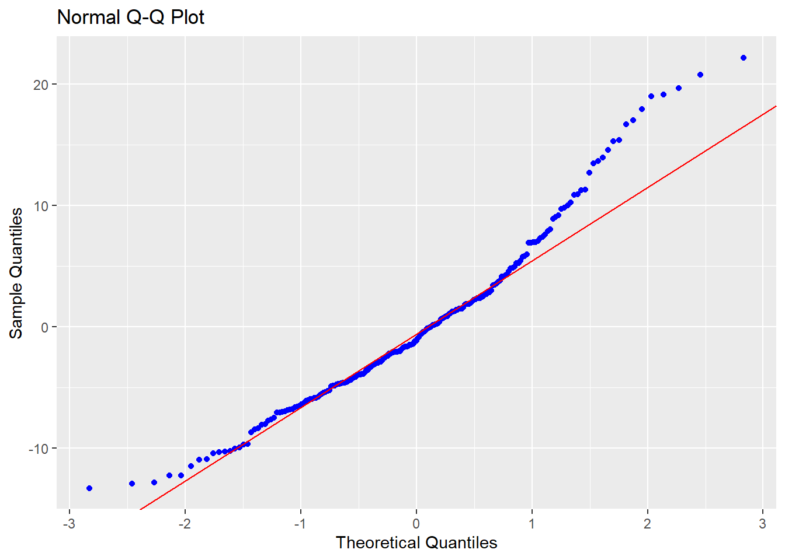
Testes estatísticos formais também podem ser utilizados, tal como abaixo:
ols_test_normality(mod_linear_multiplo)## -----------------------------------------------
## Test Statistic pvalue
## -----------------------------------------------
## Shapiro-Wilk 0.9584 0.0000
## Kolmogorov-Smirnov 0.0838 0.0980
## Cramer-von Mises 17.3314 0.0000
## Anderson-Darling 2.3732 0.0000
## -----------------------------------------------Tanto a visualização do QQ plot, como a maior parte dos testes estatísticos específicos convergiram, indicando que a normalidade foi violada.
Homocedasticidade: Este pressuposto de variâncias constantes pode ser analisado em um gráfico de dispersão dos resíduos (residual) contra os valores previstos (fitted).
ols_plot_resid_fit(mod_linear_multiplo)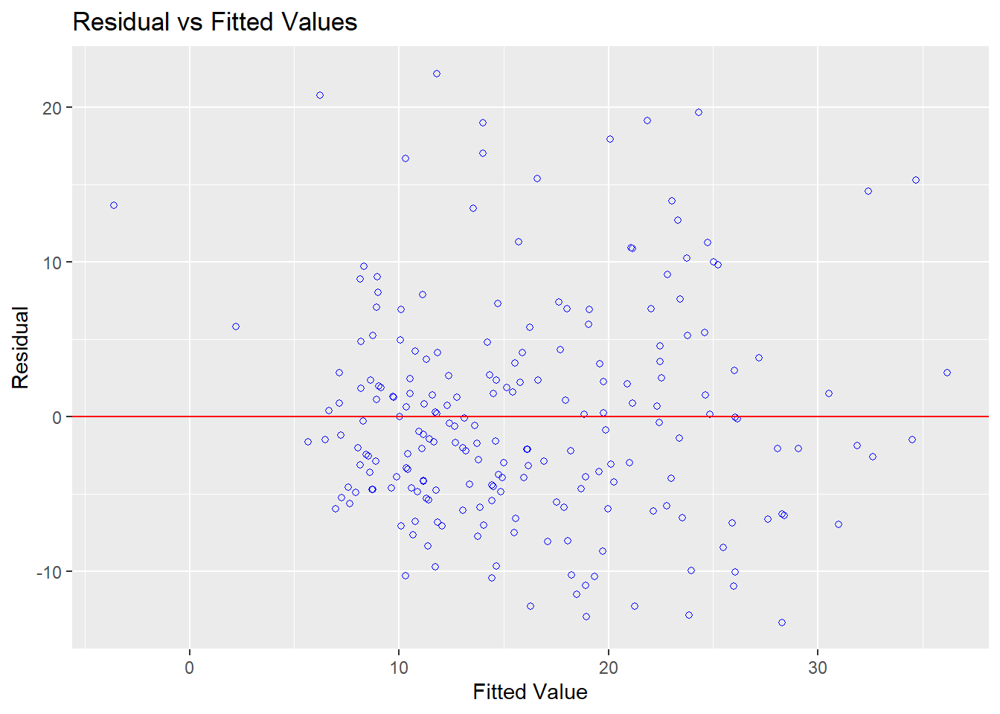
Caso haja padrões neste gráfico, isso sugere que este pressuposto foi violado. Pelo gráfico, parece não haver padrões específicos. No entanto, testes formais são recomendados para que a decisão tomada tenha maior apoio. Existem diferentes testes para isso e, entre eles, o teste de Bartlett, Levene e Breusch-Pagan. Os resultados dependem das propriedades de cada um dos modelos e, em função da praticidade computacional, o teste de Breusch-Pagan será utilizado. Em todos estes testes, a hipótese nula assume homocedasticidade. Portanto, a estatística de teste não deveria ser significativa para que a homocedasticidade fosse apoiada.
ols_test_breusch_pagan(mod_linear_multiplo)##
## Breusch Pagan Test for Heteroskedasticity
## -----------------------------------------
## Ho: the variance is constant
## Ha: the variance is not constant
##
## Data
## ------------------------------------
## Response : eat_soma
## Variables: fitted values of eat_soma
##
## Test Summary
## -----------------------------
## DF = 1
## Chi2 = 4.30662
## Prob > Chi2 = 0.03796432Os resultados indicaram que a homocedasticidade foi violada (assumindo alfa = 0.05). Isso vai em direção distinta à percepção gráfica, o que pode ocorrer sem nenhum problema.
Independência: A independência dos resíduos depende bastante do delineamento utilizado ser transversal ou longitudinal. O teste de Durbin Watson pode ser utilizado e sua hipótese nula é de que os resíduos não são correlacionados. Este pressuposto foi atendido, o que já era esperado.
car::durbinWatsonTest(mod_linear_multiplo)## lag Autocorrelation D-W Statistic p-value
## 1 0.01304954 1.969107 0.828
## Alternative hypothesis: rho != 0Multicolinearidade: Diferente da regressão linear simples, a regressão múltipla reúne diversas variáveis independentes. É possível que essas variáveis sejam muito correlacionadas entre si, impactando na interpretação dos resultados. Uma maneira de verificar isso é pela análise chamada Variance Inflaction Factor (VIF).
Valores de VIF superiores a 4 indicam que as variáveis indepenentes são fortemente correlacionadas e suas estimativas podem ser distorcidas. Neste caso, isso não aconteceu.
ols_coll_diag(mod_linear_multiplo)## Tolerance and Variance Inflation Factor
## ---------------------------------------
## Variables Tolerance VIF
## 1 bsq_soma 0.9538383 1.048396
## 2 imc 0.9538383 1.048396
##
##
## Eigenvalue and Condition Index
## ------------------------------
## Eigenvalue Condition Index intercept bsq_soma imc
## 1 2.87635756 1.000000 0.002695176 0.018049758 0.002618025
## 2 0.11198156 5.068135 0.034717221 0.979324006 0.029970923
## 3 0.01166088 15.705646 0.962587603 0.002626235 0.967411052Com isso realizado, os diagnósticos indicaram que a normalidade e a homocedasticidade foram violadas, novamente sugerindo uma interpretação cautelosa dos resultados. Abaixo uma orientação de como escrever os resultados.
17.3 Execução no JASP
Para executar as rotinas necessárias, será necessário carregar a base de dados para o ambiente JASP. A base chama-se csv eat bsq brasil. Após fazer isso, para realizar tabelas e gráficos descritivos, deve-se clicar em Descriptives, na parte superior do programa.

Ao clicar nesta opção, será possível eleger as variáveis que irão ser analisadas e as variáveis que irão funcionar como agrupadores. Neste caso, será necessário colocar o bsq_soma, eat_soma e o imc na seção Variables. Essa ordem ajuda em apresentações gráficas futuras.
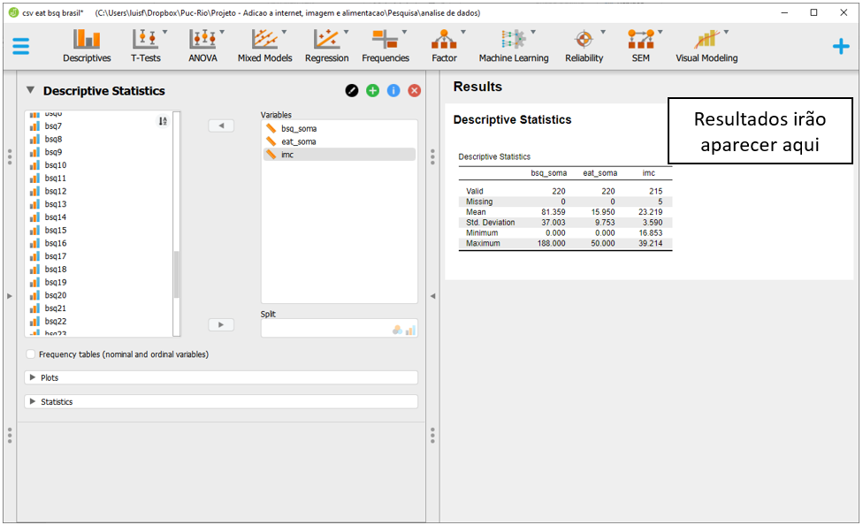
Apesar de não ser uma etapa fundamental, é possível gerar os gráficos de dispersão entre as variáveis para ter uma primeira análise do relacionamento entre elas. Para fazer isso, será necessário clicar em Plots.
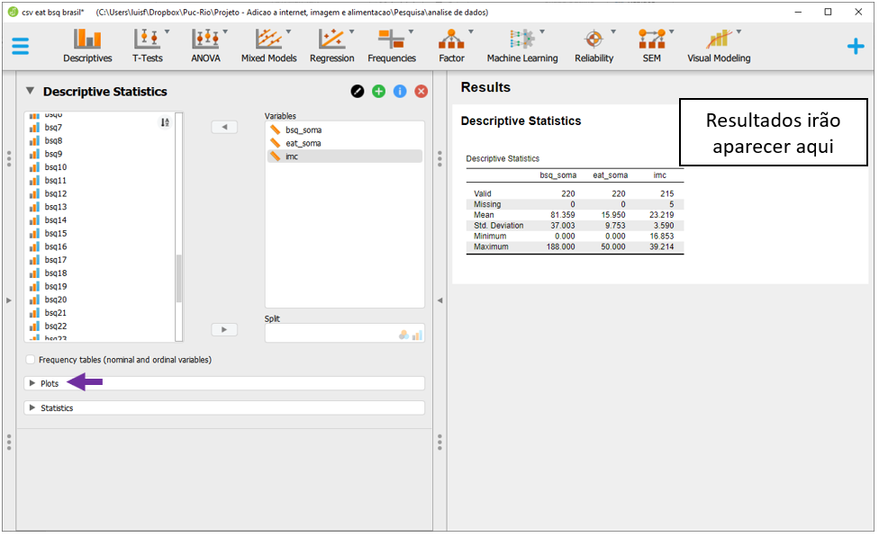
Muitas opções são possíveis, mas a Scatter Plots é a mais completa e é necessário clicar neste local. Ao fazer isso, o JASP irá apresentar três gráficos diferentes.
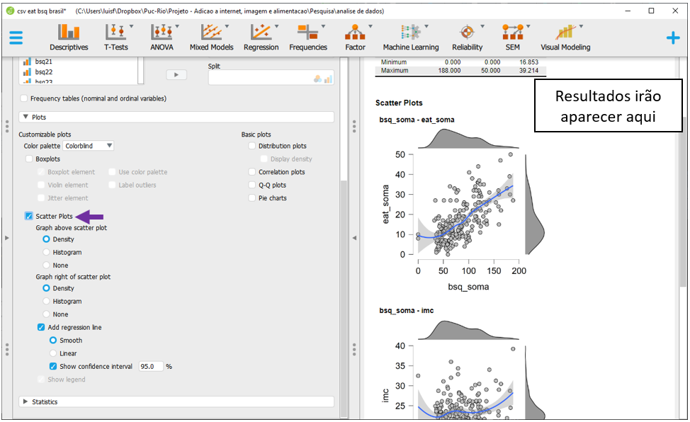
O JASP insere alguns Esses gráficos são úteis para verificar o perfil de relacionamento entre as variáveis, bem como algumas outras características. Seria possível, formalmente, calcular a correlação e a correlação parcial entre as variáveis. Apesar de alguma utilidade deste procedimento, isso acabaria repetindo algo do que foi demonstrado no capítulo sobre regressão e, por isso, não será refeito.
Para execução da regressão linear, será necessário clicar em Regression e Linear Regression.
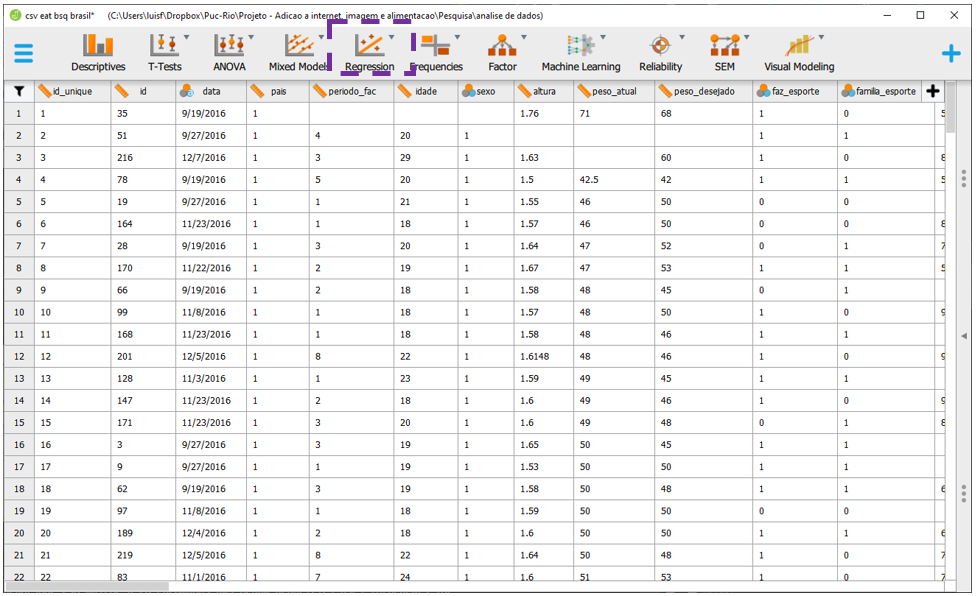
A tela do JASP irá apresentar algumas opções. É importante notar que a Covariates é o local onde as VIs serão colocadas e Dependent Variable é onde a VD deverá ser inserida. Enquanto é possível inserir muitas variáveis independentes (fazendo um modelo múltiplo), apenas uma VD poderá ser inserida. O JASP apenas aceitará variáveis contínuas ou definidas como contínuas nos espaços apresentados.
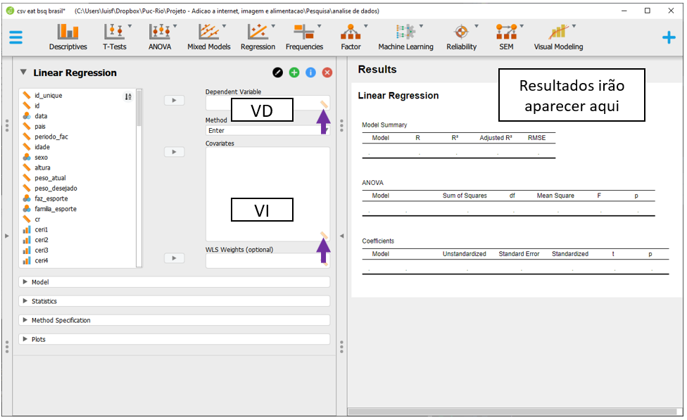
Para realizar o modelo, será necessário levar a bsq_soma e imc para seção Covariates e a eat_soma para Dependent variable. Ao fazer isso, o JASP irá fazer todas as principais análises e apresentar os resultados em uma tabela específica, ao lado direito da tela. É fácil notar que os resultados apresentados são muitos e se recomenda uma ordem específica para interpretá-los.
Em primeiro momento, é necessário verificar o ajuste do modelo na seção ANOVA, bem ao centro dos resultados. Este teste compara o modelo em questão contra um modelo em que apenas o intercepto é utilizado para prever todos os valores. No JASP, esses modelos são descritos por H1 e H0 nas principais tabelas. Tecnicamente, o modelo analisado é chamado de irrestrito (ou aumentado, H1) e o modelo que tem apenas o intercepto é chamado de restrito ou nulo, H0. Valores significativos são necessários nesta etapa. Nesta análise, o resultado foi F(2, 212) = 99.976, p < 0.0001, indicando que os outros resultados podem ser interpretados. Quando isso acontece, deve-se desconsiderar todas as linhas que o JASP apresentar resultados para o modelo nulo, simbolizado porH0, e apenas interpretar os resultados do modelo testado, que é apresentado sempre por H1.
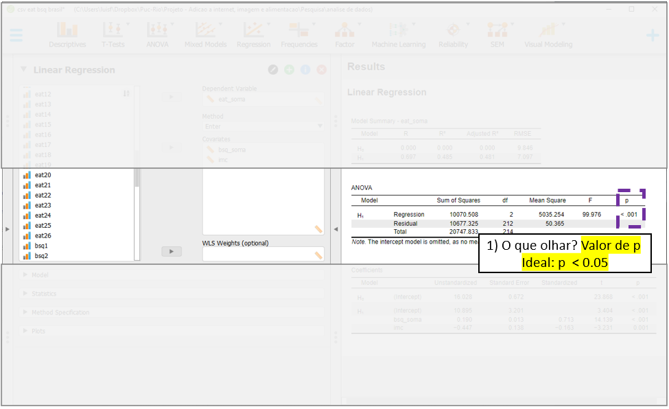
O segundo momento consiste na interpretação do \(R^2\), que está localizado na parte superior, em Model summary. Como exposto no início do capítulo, esse indicador mensura a parte da variação da variável dependente (Y) que pode ser atribuída às variáveis independentes do modelo (X). Repare que ele é computado pela razão entre o SSR e o SST e indica que cerca de 48% dos resultados da variabilidade do EAT-26 podem ser explicados pelo modelo.
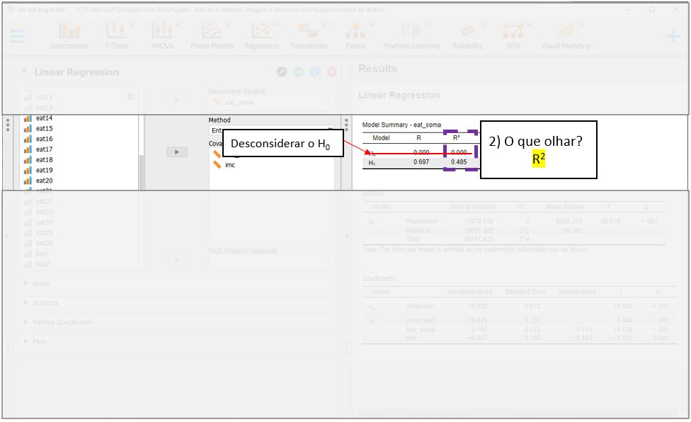
O terceiro momento é a análise do \(R^2 ajustado\), que também está localizado na parte superior, em Model summary. Em modelos de regressão, modelos com mais parâmetros/preditores sempre vão ter \(R^2\) maior do que modelos mais compactos, independente da significância destes outros parâmetros. O \(R^2 ajustado\) é uma medida que considera a complexidade do modelo e pune a entrada de novas variáveis.
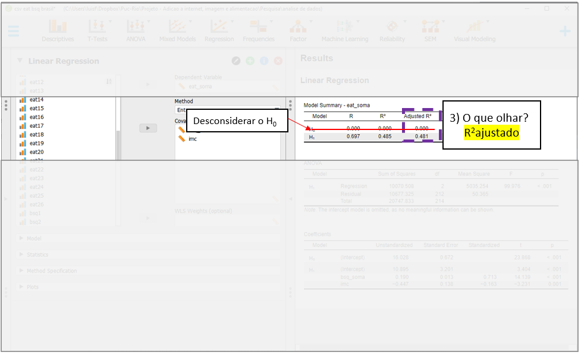
Finalmente, o quarto momento é análise dos preditores, que é feito na seção Coefficients. Para isso, deve-se identificar os preditores um a um, seus valores Unstandardized e de P. O Unstandardized indica a diferença média em unidades da variável dependente quando se altera uma unidade de X.
Por exemplo, mais 1 ponto no BSQ-34, mais 0.190 pontos, em média, no EAT-26, controlando pelos resultados do IMC. Esse resultado é significativo, tal como é indicado na coluna Sig.
O intercepto é chamado de constante na maior parte dos programas e indica o valor médio (esperado) de Y quando X=0. Nesse caso, se alguém tivesse tirado o valor 0 na escala BSQ-34, o valor previsto para os resultados da Escala EAT-26 seria de 1.46. No entanto, o Sig indica que esse valor não é significativo, ou seja, não é diferente de 0. O indicador de beta padronizado Standardized traz as mesmas informações, mas trabalha em unidades de desvios-padrão em todas as variáveis presentes no modelo. Eventualmente, o Standardized pode ser entendido como uma medida preliminar de tamanho do efeito (Fox, 2016).
É importante notar que frequentemente o intercepto não tem interpretação lógica e, por isso, costuma ser desconsiderado. Para que ele tenha melhor capacidade de interpretação, algumas estratégias são possíveis, tal como centralizar os valores do preditor \((x_i-\bar{x})\). Caso isso seja feito, o intercepto irá ser o valor médio da variável dependente.
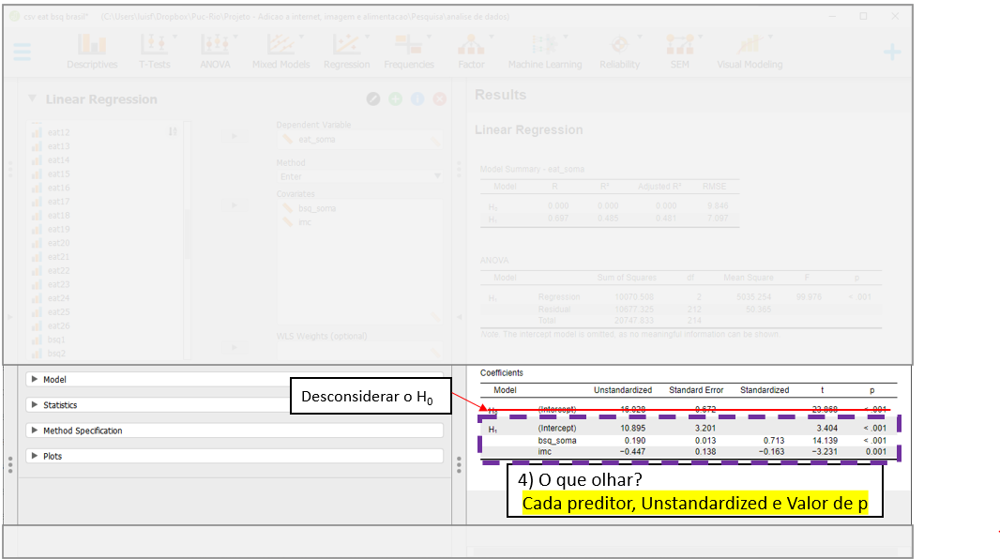
Em síntese, cada uma das etapas deve ser feita de maneira sequencial. A imagem a seguir apresenta um sumário com todos os passos expostos.
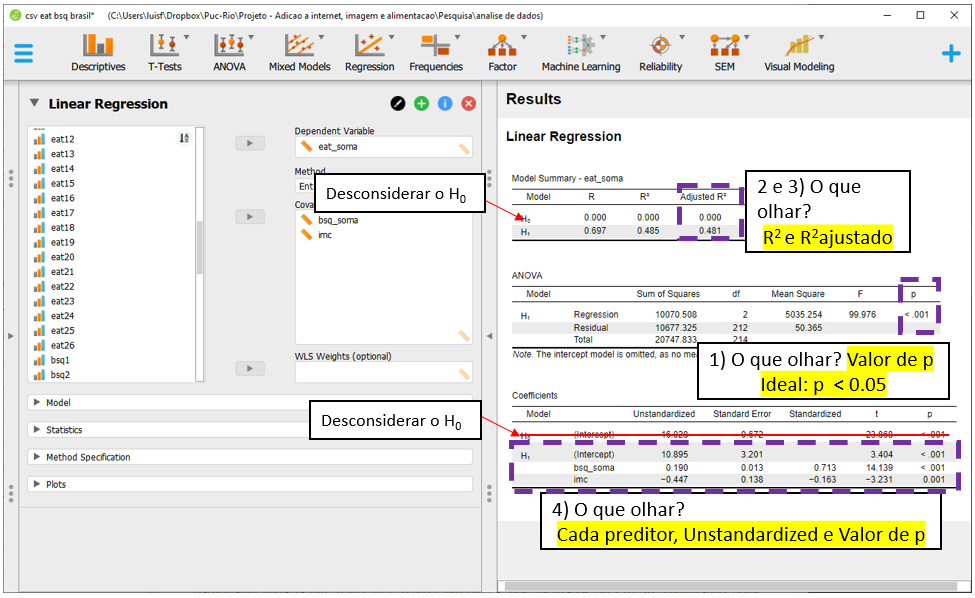
Uma vez que o modelo já foi realizado, a interpretação dos resultados depende da adequação de seus pressupostos. A violação destes pressupostos distorce, limita ou invalida as interpretações teóricas propostas, uma vez que tanto o aumento do erro do tipo 1 (falso positivo), como do tipo 2 (falso negativo) podem ocorrer (Barker & Shaw, 2015; Ernst & Albers, 2017; Lix et al., 1996). Corriqueiramente, testar os pressupostos é uma etapa anterior à própria realização do teste inferencial. Entretanto, pedagogicamente a apresentação deles após a execução do teste parece mais adequada. Assim, eles serão testados a seguir.
Para verificar os pressupostos, será necessário utilizar as opções dispostas na parte inferior à esquerda do programa.
A normalidade é testada ao clicar em Plots e Q-Q plot standardized results. O JASP irá apresentar um QQ plot com duas informações principais: uma diagonal e um conjunto de pontos/círculos. Caso os círculos estejam sobrepostos à linha, isso apoia que os resíduos se distribuem normalmente. No caso abaixo, isso não foi alcançado.
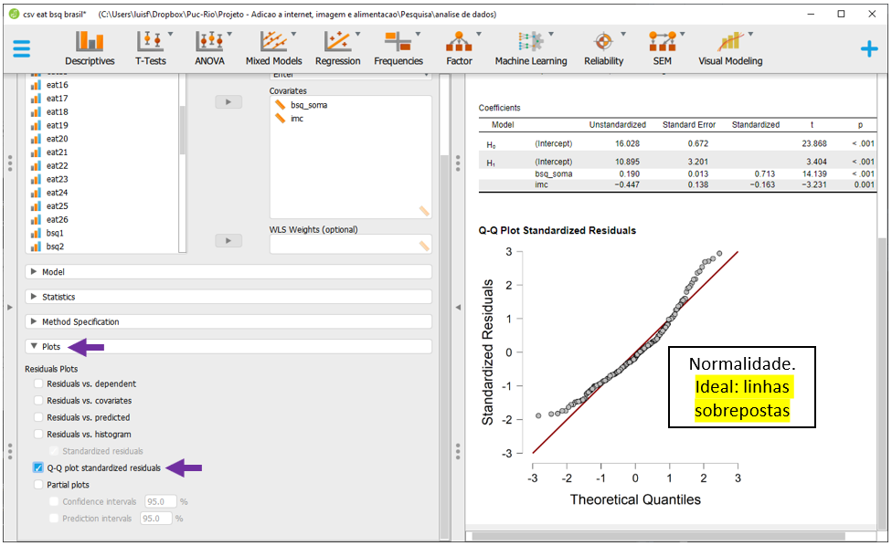
Diferente do R, esta versão do JASP não permite testar formalmente a hipótese de normalidade residual. Dessa forma, será necessário contar apenas com a percepção do gráfico para checar se o pressuposto foi respeitado ou violado.A homocedasticidade é também verificada graficamente. Ao clicar no Residuals vs. Predicted, o plano irá apresentar os valores dos resíduos em Y e os valores previstos em X. Nesse gráfico, é importante não detectar nenhum padrão nos elementos apresentados. Os resultados parecem indicar uma violação deste pressuposto foi alcançado.
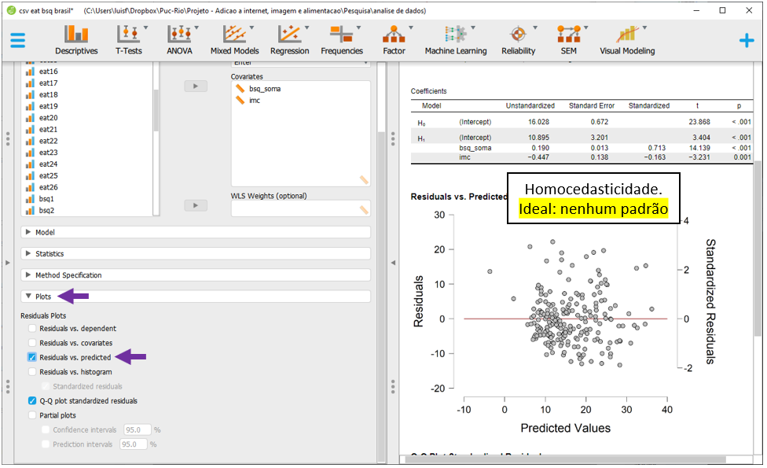
A Independência dos resíduos é bastante dependente do tipo de delineamento utilizado. No entanto, o JASP permite que esse pressuposto seja formalmente testado pelo teste de Durbin Watson. Isso é feito ao clicar em Statistics, Residuals e Durbin-Watson
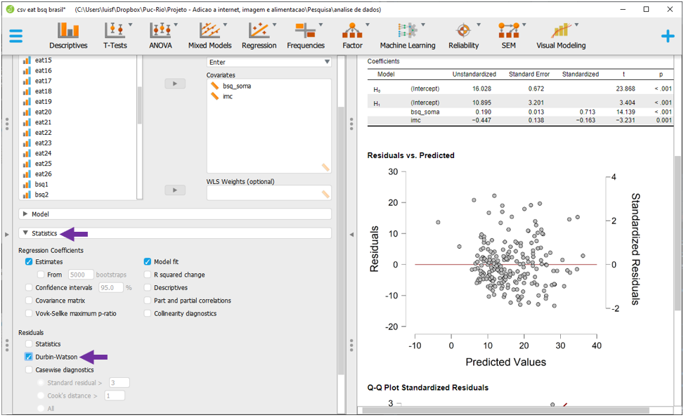
Os resultados irão ser apresentados na parte superior do programa. Caso a hipótese nula não seja rejeitada, isso apoia que os resíduos são independentes. Nesse caso, o valor de p foi 0.769, indicando que isso ocorreu.
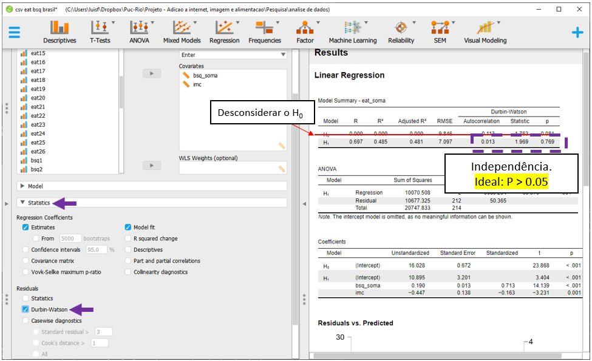
A Multicolinearidade é uma condição que, diferente da regressão linear simples, deve ser testada na regressão múltipla. Isso ocorre pois este tipo de modelo estatístico reúne diversas variáveis independentes e é possível que elas sejam muito correlacionadas entre si. Uma maneira de testar essa condição é pela análise chamada Variance Inflaction Factor (VIF).
No JASP, será necessário clicar, dentro da seção Statistics, a opção Colinearity diagnosis.
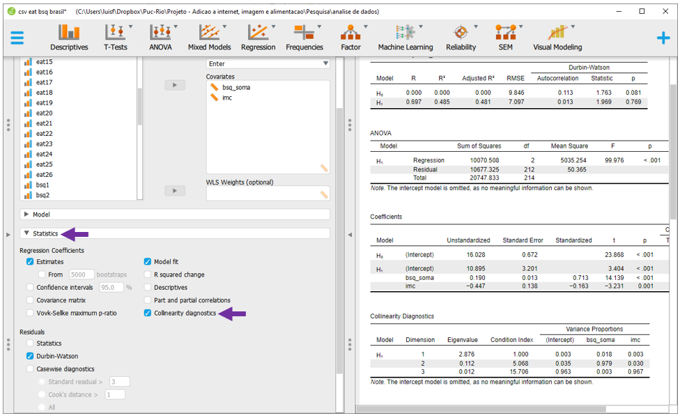
O JASP irá fazer os cálculo e irá apresentar os resultados na seção Coefficients, nas últimas colunas ao lado direito da tabela. Cada um dos coeficientes apresentará um valor e o ideal é que o VIF seja inferior a 4. Valores acima disso indicam que as variáveis independentes são fortemente correlacionadas e suas estimativas podem ser distorcidas. Neste caso, isso não aconteceu.
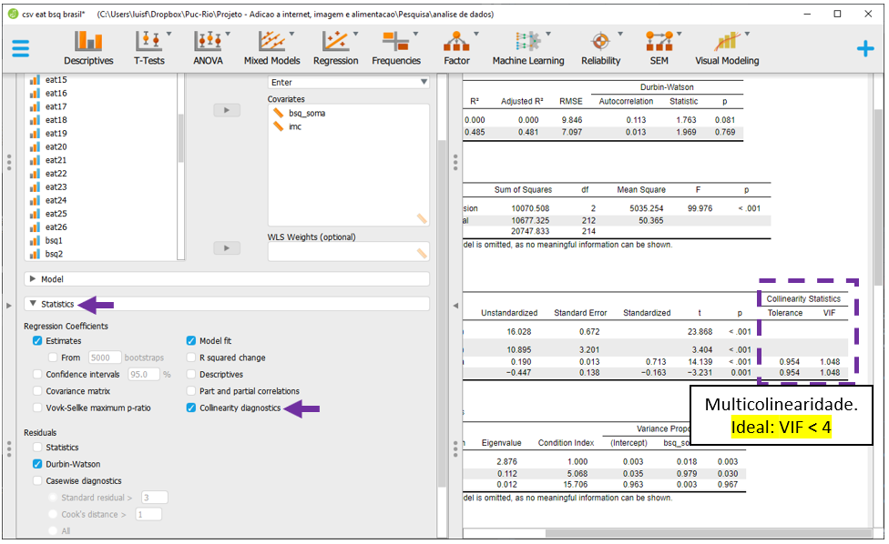
Com isso realizado, os diagnósticos indicaram que a normalidade e a homocedasticidade foram violadas, novamente sugerindo uma interpretação cautelosa dos resultados.
17.4 Escrita dos resultados
De uma forma geral, o principal achado do modelo de regressão é que a percepção da imagem corporal e o IMC são preditores significativos ao comportamento alimentar. Possíveis superestimativas da imagem do próprio corpo impactam em alterações no comportamento alimentar. Quanto maior a distorção na percepção corporal, mais intensos e frequentes são algumas características disfuncionais do comportamento alimentar. Além disso, pessoas com maior IMC tendem a apresentar uma redução no comportamento alimentar. Abaixo uma sugestão de escrita baseada nas recomendações da American Psychological Association (APA).
Como escrever os resultados
Um modelo de regressão múltipla foi calculado para verificar os resultados dos comportamentos alimentares (EAT-26) em função da percepção de imagem corporal (BSQ-34) e do peso do participante. Os resultados indicaram que cerca de 48% da variância do EAT-26 pode ser atribuída aos preditores (R2 = 0.486, F(2,213) = 100.675, p < 0.001). Cada ponto a mais no BSQ-34 impacta, em média, em 0.180 no EAT-26 (p < 0.001), controlando pelo peso do participante.
17.5 Técnicas automáticas de seleção de variáveis
Entre os principais debates realizados na construção de modelos estatísticos, os critérios sobre quantas, quais e como eleger as variáveis independentes é um dos mais intensos.
Neste sentido, a seleção das VIs visa otimizar a acurácia do modelo, mas sem perder sua parcimônia, ou seja, simplicidade (Gaudio & Zandonade, 2001; Unger & Hansch, 1973). É possível inserir as variáveis por uma justificativa teórica alinhada com a área principal em que o pesquisador se insere, como também é possível implementar seleção automática a partir de algoritmos específicos.
Apesar do detalhamento das técnicas automáticas estar fora do escopo deste capítulo, a seguir são listadas algumas delas:
- Backward selection
- Forward selection
- Stepwise selecion
- Lasso selection
17.6 Resumo
- O termo regressão múltipla se refere a um modelo de regressão com duas ou mais variáveis independentes
- As VIs podem ser de qualquer natureza, o que significa que toda família da ANOVA pode ser entendida como casos particulares de regressão
- As estimativas geradas pela regressão múltipla para uma variável são controlam por todas as variáveis do modelo
- Os diagnósticos são os mesmos dos modelos simples, mas agora é necessário também testar a multicolinearidade do modelo
- Existem diferentes métodos para adicionar preditores e maneiras manuais e automáticas são disponíveis
17.7 Pesquisas adicionais
- Influence of Age and Education on the Performance of Elderly in the Brazilian Version of the Montreal Cognitive Assessment Battery (DOI: 10.1159/000489774) Nesta pesquisa, 110 participantes foram recrutados para que os pesquisadores pudessem produzir tabelas estatísticas para um novo exame neuropsicológico. Uma das análises feitas verificou o impacto dos anos de estudo no desempenho neste exame neuropsicológico, concluindo pelo seu efeito protetivo.
17.8 Questões
- (ENADE, Economia - 2019) Com o objetivo de entender o impacto das internações causadas pela falta de saneamento básico, um pesquisador estimou o modelo apresentado na tabela a seguir, usando a quantidade de dias de internação de uma amostra de 7 260 pacientes do Sistema Único de Saúde como variável explicada. As variáveis explicativas são: (i) gênero do paciente, binária em que é 1 é utilizado para identificar as mulheres e 0 para identificar os homens; (ii) idade do paciente em anos de vida; e (iii) motivo da internação, também binária, em que recebe o valor 1 para identificar internações que são causadas por problemas de saneamento básico e o valor 0 para as demais internações
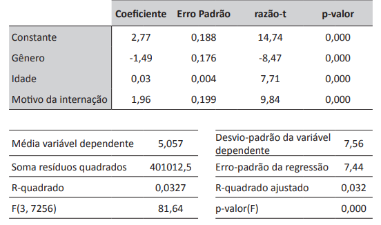
- O coeficiente R-quadrado encontra-se abaixo de 30%, o que significa que o modelo deve ser descartado.
b) As internações causadas pela deficiência de saneamento básico tendem a gerar um aumento de 1,96% nos gastos de saúde.
c) A média de dias de internação para mulheres é estatisticamente maior que a de internação para homens.
d) A variável idade não é estatisticamente significativa para explicar o número de dias de internação.
e) O teste F mostra que as variáveis explicativas conjuntamente são estatisticamente significativas para explicar o número de dias de internação.
Gabarito: 1-e